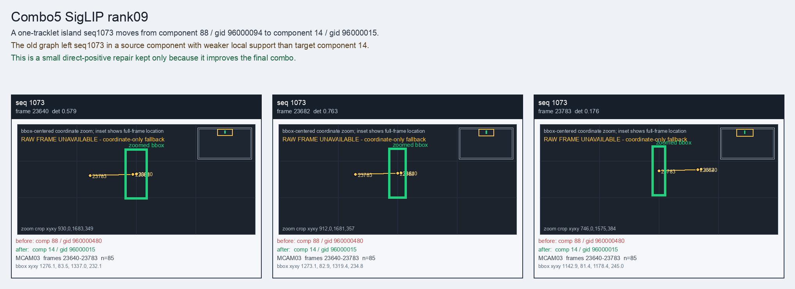

Combo5 SigLIP rank09
A one-tracklet island seq1073 moves from component 88 / gid 96000094 to component 14 / gid 96000015.
Before
component 88, gid 960000480, component_size 55
component 88, gid 960000480, component_size 55
After
component 14, gid 96000015, component_size 167, decision_status post_seq6257_combo_probe
component 14, gid 96000015, component_size 167, decision_status post_seq6257_combo_probe
Evidence
target_sim=0.6588, target_margin=0.0626, source_rest_margin=0.5411
Raw frame
unavailable_coordinate_fallback
target_sim=0.6588, target_margin=0.0626, source_rest_margin=0.5411
Raw frame
unavailable_coordinate_fallback
Failure and fix
Old failure: The old graph left seq1073 in a source component with weaker local support than target component 14.
New implementation: This is a small direct-positive repair kept only because it improves the final combo.
BBox evidence

Moved tracklets
| seq | video | gid | component | frames | dets |
|---|---|---|---|---|---|
| 1073 | vlincs_MS01_MC0001_MCAM03_2024-03-Tc6 | 960000480 -> 96000015 | 88 -> 14 | 23640-23783 | 85 |